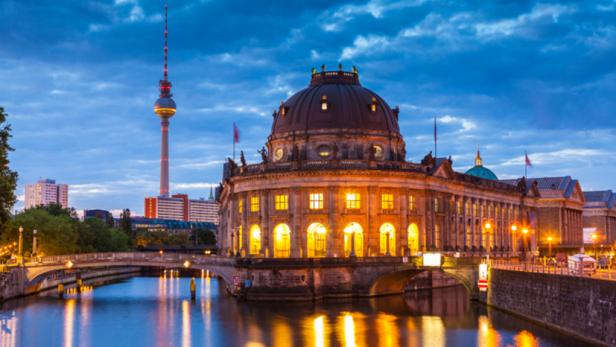
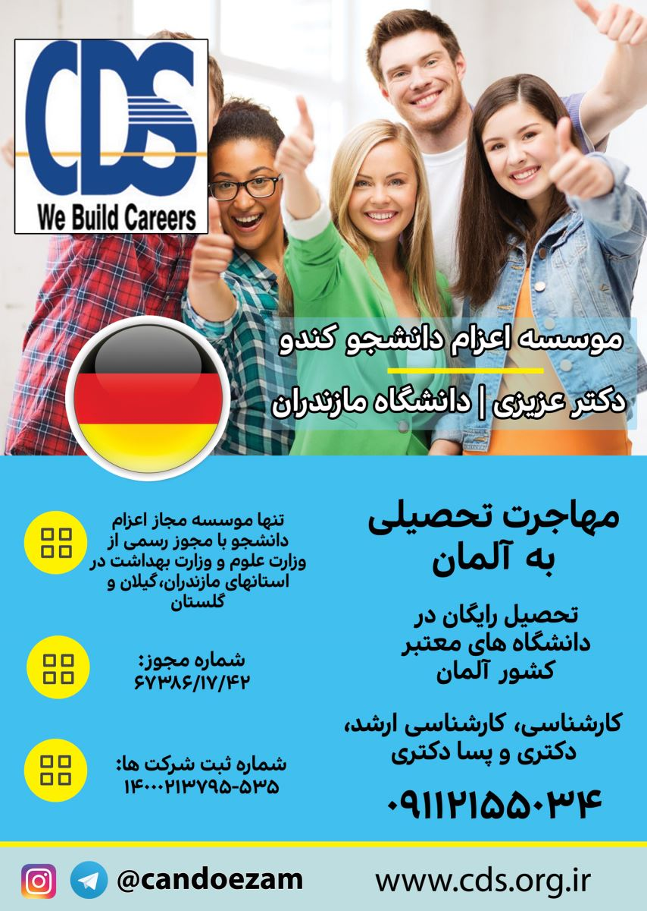
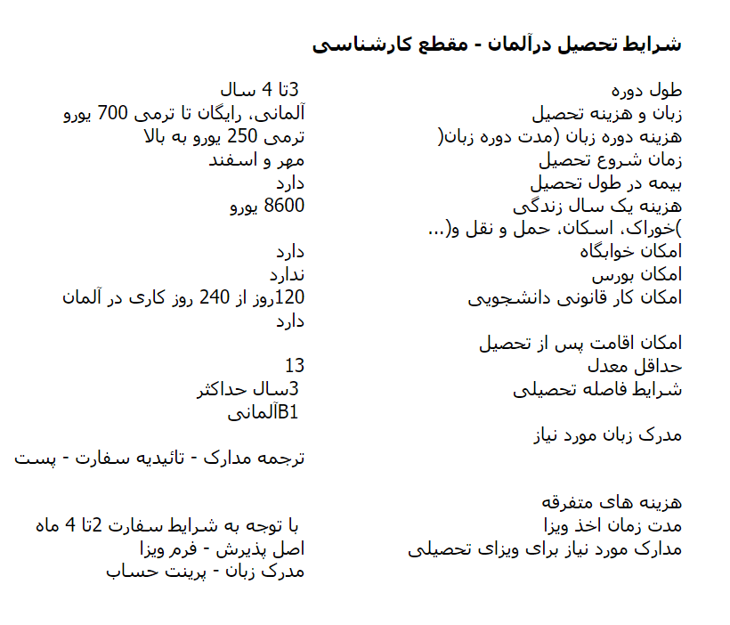
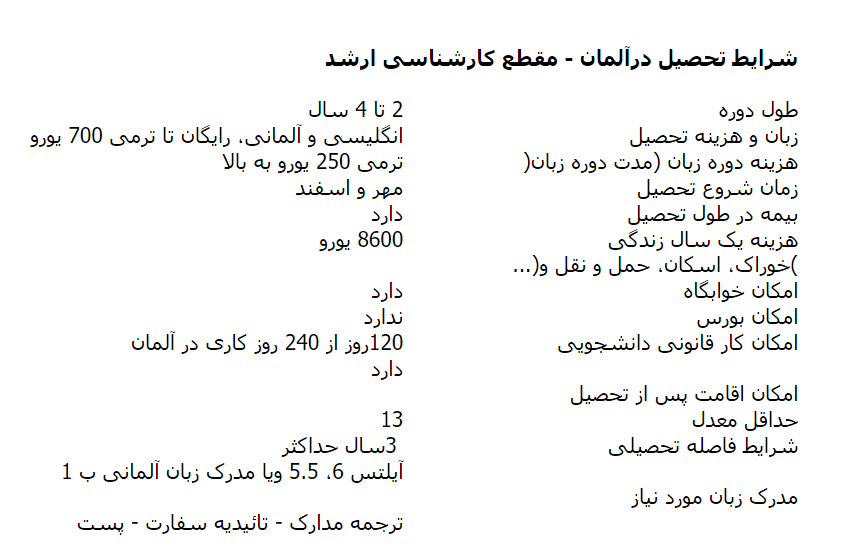
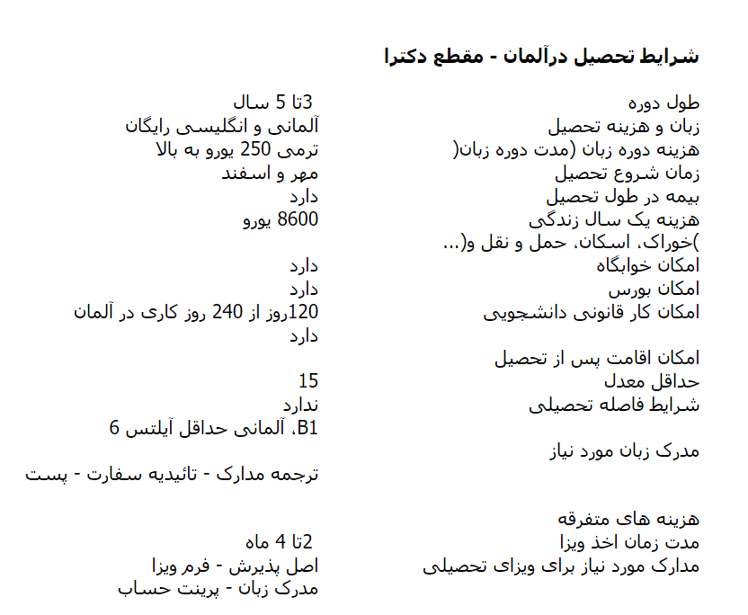

تحصیل در آلمان در رشته های ارشد به انگلیسی بدون نیاز به داشتن مدرک زبان آلمانی
تحصیل در بهترین دانشگاههای این کشور با امکان کار و تامین کامل هزینه های ماهیانه و اخذ اقامت
مزایا:
- تحصیل در مقطع ارشد کاملا رایگان است.
- امکان اخذ اقامت بعد از فارغ التحصیلی وجود دارد.
- کلیه دوره ها به انگلیسی برگزار میشود و نیازی به داشتن مدرک زبان آلمانی نیست.
اجازه کار تا ۸۰ ساعت در ماه حداقل درآمد ماهیانه با احتساب حد اقل دستمزد به ازای هر ساعت در سال 2017 معادل 9.23 یورو می باشد هزینه زندگی دانشجویی ماهیانه 720 یورو میباشد.
- اخذ پذیرش ظرف ۲ هفته پس از دریافت مدارک در آلمان و اخذ ویزا!
- امکان اخذ پذیرش برای افراد متاهل وجود دارد. ( همسری که اشتغال به تحصیل ندارد میتواند بدون محدودیت زمانی کار کند).
حتی اگر دانش آموخته یکی از رشته های ارشد هستید پیشنهاد میشود تحصیل خود را دوباره از مقطع ارشد در آلمان شروع کنید.
شرایط:
- زیر ۴۰ سال داشته باشید.
- معدل کارشناسی تان حداقل ۱۴ باشد.
-نمره ۶ IELTS و یا ۷۹ IBT داشته باشید.
- اثبات توانایی مالی – پرینت بانکی که نشان دهد معادل ریالی مبلغ8640 یورو در حساب بانکی شما موجود است ( نیاز به گردش حساب مالی نمی باشد). اینکار فقط یکبار و برای اخذ ویزا لازم است انجام شود.
توضیح: کلیه دانشگاههای آلمانی طرف قرارداد این موسسه مورد تایید وزارت علوم جمهوری اسلامی ایران میباشند.
Some Universities in Germany offering international graduate programs
· Ruprecht-Karls-Universität Heidelberg – international master’s programs in English
· Ludwig-Maximilians-Universität München – graduate ‘English-taught courses’ (ETC)
· Technische Universität München (TUM) – international graduate programs in English
· Universität Freiburg – English-language master’s programs
· Karlsruhe Institute of Technology (KIT) – English-language graduate programs
· Humboldt-Universität zu Berlin – international master’s programs in English
· Georg-August-Universität Göttingen – international graduate programs in English
· RWTH Aachen University – international master’s programs in English
· Freie Universität Berlin – international master’s programs in English
· Rheinische Friedrich-Wilhelms-Universität Bonn – international graduate programs in English
· Universität Hamburg – bilingual and English-language master’s programs
· ESCP Europe - international business and management master's programs in English (based across ESCP campuses in Berlin, London, Madrid, Paris and Turin)
· Friedrich-Alexander University Erlangen-Nürnberg - a range of master's programs taught fully or partly in English
Please note that this is not a comprehensive list. For the full list of German universities featured in the QS World University Rankings 2015/16, visit this page. You can also find more information on international graduate programs offered at Germany’s leading institutions on the TU9 website, which has a list of courses available at the nine engineering and technology-focused universities which comprise the TU9 group. The DAAD’s international program search tool can also help you search for graduate and doctoral programs offered at universities in Germany.
For answers to all your queries about studying abroad in Germany, see our list of Frequently Asked Questions About Studying in Germany.
میتوان به جرات گفت کشور آلمان قویترین اقتصاد در میان کشور های اتحادیه اروپا را دارا میباشد و علی رغم رکود اقتصادی که دیگر کشور های اروپا نظیراسپانیا ، فرانسه و یونان را دچار ورشکستگی اقتصادی کرده است ، کشور آلمان کماکان به عنوان صحنه اصلی یافتن فرصت های شغلی مناسب در میان کشور های اروپایی محسوب میشود .
دانشگاه های بسیار ممتاز کشور آلمان از یک سو و آینده ی روشن پیش روی دانشجویان دانشگاه های این کشور و مهمتر از همه رایگان بودن تحصیلات در این کشور باعث شده است تا آلمان به عنوان یکی از کشورهای سرآمد دنیا از لحاظ پذیرش دانشجو مطرح گردد .
البته ذکر این نکته نیز ضروری است که دانشجویانی که قصد اخذ اقامت دائم آلمان را پس از اتمام دوره تحصیل ، دارا می باشند ، پروسه بسیار سختی را با توجه به قوانین مهاجرتی آلمان پیش رو دارند . کندو به این دسته از متقاضیان اخذ اقامت دائم آلمان توصیه میکند تا قبل از اقدام جهت اخذ ویزای تحصیلی کشور آلمان ، به درستی شرایط اخذ اقامت دائم پس از دوره تحصیلی را بررسی نمایند .

تحصیلات ابتدایی در کشور آلمان
کودکان از سه سالگی وارد مهد کودک می شوند . آموزش به طور رسمی در کشور آلمان در مدارس از ۶ سالگی شروع می شود دوره ی ابتدایی در مدارس کشور آلمان به مدت ۴ سال می باشد . پس از دوره ی ابتدایی دوره ی جدیدی آغاز می شود که مدت آن ۶ سال می باشد . در پایان این دوره دانش آموزان بعد از۹ سال تحصیلی ( ۴سال ابتدایی + ۵سال بعد از ابتدایی) مدرک Hanp tschulabschluss یا پس از گذراندن ۱۰ سال ( ۴ سال ابتدایی + ۶ سال بعد از ابتدایی) مدرک Real schulabschluss می گیرند.پس از اتمام این دوره دانش آموزان دو راه در پیش روی خود دارند .
راه اول ) مدارس فنی :
پس از انتخاب مدارس فنی هم امکان وارد شدن به بازار کار را دارند و هم انتخاب مدارس عالی فنی کسانی که این دوره را انتخاب می کنند افرادی هستند که وارد شدن به بازار کار برایشان اولویت است نه تحصیلات عالیه . هم چنین بعد از گذراندن این دوره ی فنی وارد مدارس عالی فنی می شوند یعنی مدارس مخصوص که برای این دانش آموزان تعبیه شده .
راه دوم ) ادامه تحصیل در دبیرستان با گرایش های گوناگون :
که پس از اتمام دوره ی دبیرستان وارد دانشگاهها می شوند . این دوره برای دانش آموزانی است که قصد دارند در رشته های گوناگون تحصیل کرده و تحصیلات عالیه داشته باشند .
تحصیل در مقطع لیسانس کشور آلمان
سیستم آموزشی کشور آلمان به دلیل حساسیت بسیار زیاد دولت آلمان به روی زبان آلمانی طوری طراحی شده است تا تمامی رشته های ارائه شده به زبان آلمانی ارائه شوند .
مقطع لیسانس در کشور آلمان ۴ ساله است افرادی که متقاضی ورود به این مقطع هستند می بایستی مدرک دیپلم را داشته باشند تا بتوانند در این دوره شرکت کنند . هم چنین این نکته حائز اهمیت است که دوره ۴ ساله لیسانس به زبان آلمانی تدریس می شود و فرد متقاضی می بایستی مدرک زبان آلمانی B1یا B2 را داشته باشد . که بهتر است در ایران این مدرک را کسب کرده و بعد به کشور آلمان مهاجرت تحصیلی کند زیرا گذراندن دوره ی کالج زبان آلمانی در کشور آلمان دوره ای است که سفارت را متقاعد و راضی به دادن ویزا به متقاضی می کند و حتماَ باید پذیرش در یک مقطع تحصیلی را برای رفتن به سفارت ارائه دهید .
حق کار
دانشجویان مقطع کارشناسی کشور آلمان مجوز کار در محدوده ای 20 ساعته بصورت هفتگی دارا می باشند(شنبه و یکشنبه ایام تعطیل می باشند) و حداقل حقوق این افراد حدودا از 9.23 یوروبه بالا به ازای هر ساعت می باشد که که مجموع درآمدهای حاصله از کار دانشجویی میتواند براحتی هزینه های زندگی و تحصیل فرد را در یک سال پوشش دهد .
هزینه های زندگی
همان طور که در مطالب قبلی ذکر شد تحصیل در کشور آلمان به صورت رایگان است و فرد دانشجو فقط باید هزینه های ماهیانه ی زندگی خود را متقبل شود . که دولت آلمان با توجه به این که به دانشجویان در هفته اجازه کار 20 ساعت را داده است . آنها می توانند بابت هر ساعت کار از 9.23یورو به بالا را کسب کرده قسمتی از مخارج زندگی خود را پرداخت نمایند . هزینه زندگی در آلمان حداقل 600 یورو در ماه می باشد که بیشترین هزینه را مسکن در بردارد. ذکر این مطلب از اهمیت بالایی برخوردار است که هر فرد که قصد ادامه تحصیل در کشور آلمان را داشته باشد قبل از رفتن به آلمان و برای رفتن به سفارت باید نامه ای مبنی بر پشتوانه مالی نشان دهد که مبلغ آن برابر یک سال زندگی در آلمان است.(8640 یورو برای سال 2017).
کسانی که قصد دارند بعد از پایان تحصیل خود در کشور آلمان مشغول به کار تمام وقت شوند می بایستی به زبان آلمانی مسلط بوده و دوره ی تحصیلی خود را به خوبی گذرانده باشند تا بتوانند شغل مناسبی راپیداکنند و در نتیجه بعد از کسب شغل ویزای تحصیلی خود را به ویزای کاری تبدیل کنند . این نکته را نیز باید ذکر کرد که گرفتن اقامت دائم در کشور آلمان بسیار دشوار است و طولانی و افراد می بایستی مدت زمان زیادی را در کشور آلمان کار کنند تا طول دوره را سپری کرده و اقامت دائم را اخذ کنند و پس از اخذ اقامت دائم پروسه گرفتن پاس آلمانی را بگذرانند.
کارشناسی در آلمان
برای گرفتن پذیرش از دانشگاه های آلمان در مقطع کارشناسی فرد متقاضی تحصیل در مقطع کارشناسی آلمان بایستی یا کارنامه قبولی در آزمون سراسری دانشگاه ها را داشته باشد و یا در حال تحصیل در دانشگاه باشد. به عبارتی داشتن مدرک دیپلم و یا پیش دانشگاهی برای درخواست پذیرش کارشناسی از دانشگاه های آلمان کافی نیست. پس از اخذ پذیرش از دانشگاه های آلمان فرد بایستی یک دوره یکساله در کالج که در واقع همان دوره پیش دانشگاهی است را بگذراند.
این در صورتی است که دانشجویانی که چند ترمی از تحصیل آن ها در دانشگاه گذشته باشد، نیازی به گذراندن دوره کالج نخواهند داشت و تنها بر اساس صلاحدید دانشگاه یک دوره کوتاه زبان موسوم به DSH را می گذرانند. محل گذراندن این دوره کالج در داخل دانشگاه است. در آلمان دوره های کالج مختلفی بر اساس رشته تحصیلی انتخاب شده توسط فرد وجود دارد از جمله:
1. دوره کالج پزشکی موسوم به M-Kurs برای رشته های پزشکی و پیراپزشکی
2. دوره کالج مهندسی موسوم به T-Kurs برای رشته های مهندسی مهندسی، ریاضیات و…
3. دوره کالج اقتصاد موسوم به W-Kurs برای رشته های مربوط به اقتصاد، علوم اجتماعی و…
4. دوره کالج اقتصاد موسوم به G-Kurs برای رشته های مربوط به علوم انسانی و…
5. دوره کالج زبان موسوم به S-Kurs برای رشته های زبان
دوره کارشناسی ودر آلمان یک دوره ۴ ساله است و به زبان آلمانی ارائه می شود. از این رو دانشجو باید حدود ۴۸۰ ساعت زبان آلمانی خوانده باشد.
.
تحصیل در مقطع فوق لیسانس کشور آلمان
آلمان با داشتن معتبرترین دانشگاه های اروپا،سر آمد کشور های اروپایی در بحث آموزش است و به همین دلیل بسیاری از علاقه مندان به ادامه تحصیل در مقاطع بالاتر نظیر دکترا کشور آلمان را برای اتمام دوره فوق لیسانس خود انتخاب می کنند،چرا که ایشان می توانند بصورت کاملا رایگان مدارک تحصیلی خود را از بهترین دانشگاه های اروپا اخذ نموده و شانس خود را جهت اخد بورسیه های تحصیلی در مقطع دکترا افزایش دهند.دوره تحصیلات کارشناسی ارشد در کشور آلمان دو ساله است
.
دکترا در آلمان
تفاوت عمده در دورهی دکترا میان دانشگاههای آلمان و ایران، در آزمون ورودی است. برخلاف دورهی دکترا در ایران، معدل و موافقت استاد راهنما با طرح رسالهی دکترا، دو عامل اصلی برای پذیرش در دانشگاههای آلمان به شمار میرود.
امکان تحصیل در مقطع دکترا در آلمان، در ۱۲۰ دانشگاه این کشور فراهم شده است. به سبب این امکان، سالانه در حدود ۲۵ هزار نفر در مقطع دکترا از دانشگاههای آلمان فارغالتحصیل میشوند.
شرایط علمی برای ورود به مقطع دکترا
در دورههای دکترا در دانشگاههای آلمان، همانند دورههای کارشناسی و کارشناسی ارشد، آزمون ورودی به معنای کنکور سراسری وجود ندارد. در اکثر موارد اما، معدل کل تاثیر مستقیمی در پذیرش خواهد داشت و متقاضیان تحصیل در مقطع دکترا باید حداقل نمرهی کل بین ۱۶ تا ۱۷ در مقطع کارشناسی ارشد را احراز کرده باشند.
اولین قدم پس از کسب شرایط علمی لازم، برقراری ارتباط با استاد راهنما است. موافقت با موضوع و پذیرش طرح دکترا (Proposal) از سوی استاد راهنما، شرایط را برای حضور در مقطع دکترا هموار خواهد کرد. دوره دکترا در دانشگاههای آلمان در فرم کلاسیک یا سنتی، بدون کلاسهای درس برگزار میشود و دانشجو در این مقطع، در زمینهی تحقیقاتی خود، با مشاوره با استاد راهنما به پژوهش و در کنار آن نوشتن رسالهی دکترا مشغول میشود.
در رشتههایی همچون زیست شناسی، بخشی از تحقیقات به صورت آزمایشگاهی انجام میشود و در رشتههای علوم انسانی، تمرکز تحقیقات بر مطالعات فردی است. دانشجوی مقطع دکترا پس از اتمام دوره، رساله خود را به صورت کتبی تحویل داده و در امتحان شفاهی نیز از طرح خود دفاع میکند.
شرایط پذیرش در مقطع دکترا از سوی هر دانشکده تعیین میشود و به تایید دانشگاه میرسد، از همین رو احتمال وجود تفاوتهایی در روند پذیرش وجود دارد. بر خلاف دورههای کارشناسی و کارشناسی ارشد در دانشگاههای آلمان، تصمیم برای موافقت با پذیرش داوطلبان در دورهی دکترا، تنها بر عهدهی کمیسیون مربوطه در هر دانشکده است و در این ارتباط مرکزی همانند اونی اسیست (uni assist) وجود ندارد. بنابراین اولین اقدام پس از احراز شرایط علمی، نوشتن طرح رساله و اقدام برای برقراری ارتباط با استاد راهنما است.
سطح معلومات زبان
افرادی که مایل به گذراندن دورهی دکترا به زبان آلمانی هستند، باید حداقل در یکی از آزمونهای (DSH) یا (TestDaF) پذیرفته شده باشند. امکان گذراندن دوره دکترا به زبان انگلیسی نیز در دانشگاههای آلمان وجود دارد. این امر مستلزم موافقت استاد راهنما است. در این صورت دانشجویان میتوانند رسالهی دکترا را به زبان انگلیسی بنویسند و در امتحان شفاهی (دفاعیه) نیز به زبان انگلیسی شرکت کنند.
دورههای تکمیلی در مدرسهی فارغالتحصیلان
در آلمان، ۳۹ مدرسهی فارغ التحصیلان که نهادی تحت پوشش دانشگاه، برای تحصیل در مقطع دکترا است و همچنین ۲۷ مرکز تحقیقاتی، با بودجهای در حدود ۲ میلیارد یورو مشغول به فعالیت هستند. وجه تمایز تحصیل در این مراکز در مقطع دکترا با فرم کلاسیک آن، در برگزاری کلاسهای درسی در این مقطع است. امکان تحصیل به زبان انگلیسی در این نوع از دورهها افزایش یافته و شرایط برای کار گروهی در مقطع دکترا و تحقیق بر روی پروژهای مشترک برای بیش از یک دانشجو نیز فراهم شده است.
زبان تدریس
دروس دانشگاهی کشور آلمان به دو صورت آلمانی و انگلیسی تدریس میشوند .
متقاضیان به اخذ پذیرش تحصیلی به زبان آلمانی ، می بایست مدارک دال بر تسلط به این زبان را در سطح B2 ) قبل از ورود به دانشگاه کسب نمایند . گفتنی است .
همان طور که در مطالب قبلی ذکر کردیم متقاضیان می توانند در دانشگاه های انگلیسی زبان تحصیل کنند . افرادی که قصد تحصیل به زبان انگلیسی را دارند می بایستی مدرک Ielts 6-6.5 را به دانشگاه ارائه دهند .(در برخی رشته ها و دانشگاه ها با داشتن نمره کمتر هم میتوان پذیرش مشروط گرفت)
دانشجویان مقطع کارشناسی ارشد کشور آلمان مجوز کار در محدوده ای ۲۰ ساعته بصورت هفتگی دارا می باشند و میانگین حقوق این افراد حدودا 9.23 یورو به بالا به ازای هر ساعت می باشد که مجموع درآمدهای حاصله از کار دانشجویی میتواند براحتی هزینه های زندگی و تحصیل فرد را در یک سال پوشش دهد .
هزینه های زندگی
همان طور که در مطالب قبلی ذکر شد تحصیل در کشور آلمان به صورت رایگان است و فرد دانشجو فقط باید هزینه های ماهیانه ی زندگی خود را متقبل شود . که دولت آلمان با توجه به این که به دانشجویان در هفته اجازه کار تا ۲۰ ساعت را داده است . آنها می توانند مبلغی را کسب کرده قسمتی از مخارج زندگی خود را پرداخت نمایند . هزینه زندگی در آلمان حداقل 600 یورو در ماه می باشد که بیشترین هزینه را مسکن در بردارد. ذکر این مطلب از اهمیت بالایی برخوردار است که هر فرد که قصد ادامه تحصیل در کشور آلمان را داشته باشد قبل از رفتن به آلمان و برای رفتن به سفارت باید نامه ای مبنی بر پشتوانه مالی نشان دهد که مبلغ آن برابر یک سال زندگی در آلمان است.
کسانی که قصد دارند بعد از پایان تحصیل خود در کشور آلمان مشغول به کار تمام وقت شوند می بایستی به زبان آلمانی مسلط بوده و دوره ی تحصیلی خود را به خوبی گذرانده باشند تا بتوانند شغل مناسبی راپیداکنند و در نتیجه بعد از کسب شغل ویزای تحصیلی خود را به ویزای کاری تبدیل کنند . این نکته را نیز باید ذکر کرد که گرفتن اقامت دائم در کشور آلمان بسیار دشوار است و طولانی و افراد می بایستی مدت زمان زیادی را در کشور آلمان کار کنند تا طول دوره را سپری کرده و اقامت دائم را اخذ کنند و پس از اخذ اقامت دائم پروسه گرفتن پاس آلمانی را بگذرانند.
تحصیل در مقطع دکترای کشور آلمان
کشور آلمان همانند سایر کشورهای پیشتاز در بحث تحصیل ، به دانش جویان در حال تحصیل در مقطع دکترا ، توجه ویژه ای دارد و جهت پرداخت مخارج تحصیل ایشان،شرایط ویژه ای را جهت تسهیل طول دوره ی دکترا در این کشور در این کشور فراهم آورده است.
بصورت کلی تحصیلات در مقطع دکترا در دانشگاه های کشور آلمان به ۲ صورت تحصیل با بورسیه تحصیلی و تحصیل در شرایطی که دانشجو شهریه ی دانشگاه را شخصا پرداخت می کند،صورت می پذیرد.
تحصیل در شرایطی که دانشجو مستلزم به پرداخت هزینه در دانشگاههای کشور آلمان می باشد، همانند اخذ پذیرش د مقطع فوق لیسانس کشور آلمان می باشد ولیکن در این مطلب شرایط لازم جهت اخذ فرصت تحصیل در مقطع دکترا به همراه اخذ بورسیه تحصیلی می پردازیم.
با توجه به این نکته که کشور آلمان برای افرادی که در مقطع دکترا در این کشور مشغول به تحصیل هستند،حقوقی ماهیانه به میزان تقریبا ۲ هزار دلار را مدنظر قرار می دهند ، فلذا دانشجویان ایرانی رقابت بسیار سختی را در راستای اخذ بورسیه دکترا در کشور آلمان در پیش دارند.
در جهت اخذ بورسیه ی تحصیل مقطع دکترا در کشور آلمان فرد متقاضی می بایست پارامترهای ذیل را احراز نمائد:
۱)در دست داشتن مدارک کارشناسی و کارشناسی ارشد از دانشگاه های معتبر
۲)اخد مدرک دال بر تسلط کافی و زبان انگلیسی (حداقل آیلتس ۶٫۵)گرچه اگر استاد راهنما در نامه پذیرش قید نماید که فرگیر مشکل زبانی ندارد دیگر نیازی به ارایه مدرک آیتلس نمی باشد.)
۳)جلب نظر یک استاد مشاور (supervisor) که تز دکترا فرد را پشتبانی نماید.
۴)داشتن تالیفات از قبیل مقالات بین المللی ، کتاب و …
۵)داشتن همه و یا تعدادی از آیتم های ذکر شده،می توان در راستای افزایش شانس فرد در جهت اخذ پذیرش نقش بسزایی ایفا نماید.
زبان تدریس
بسیاری از رشته های مهندسی در مقطع دکترا در کشور آلمان به زبان انگلیسی ارائه میشوند . موسسه کندو با توجه به تعداد زیاد پرونده های ارسالی به سفارت آلمان و سابقه بسیار طولانی وکلای این موسسه در امر پذیرش تحصیلی و اخذ ویزای تحصیلی کشور آلمان ، طول دوره ی یادگیری زبان آلمانی برای افراد مبتدی حدودا ۶ تا ۱۰ ماه تخمین میزند .
حق کار
دانشجویان مقطع دکترا کشور آلمان مجوز کار در محدوده ای 20 ساعته بصورت هفتگی دارا می باشند و میانگین حقوق این افراد حدودا بین 9.23تا 10 یورو به ازای هر ساعت می باشد که که مجموع درآمدهای حاصله از کار دانشجویی میتواند براحتی هزینه های زندگی و تحصیل فرد را در یک سال پوشش دهد .
حال این سوال مطرح میگردد که آیا هر کس می تواند در حین تحصیل خود ، کار دانشجویی پیدا کند یا خیر ؟
پیدا کردن کار دانشجویی در هر کشوری به پارامترهای متفاوتی نظیر سطح آگاهی فرد از زبان کشورها ، تجربه کاری ، ویژگی های شخصی فرد ، زمان ورود شخص به کشور و چندین عامل دیگر وابسته است . ولیکن تجربه ارزشمند موسسه کندو مبین این مطلب است که فقط به دلیل ویژگی های شخصی متفاوتی ( مثل عدم وفق پذیری با محیط ، سطح ضعیف برقراری ارتباط و یا عوامل مشابه ) می باشد
هزینه های زندگی
هزینه های زندگی در آلمان برای دانشجویان به صورت میانگین بین ۶۰۰ تا ۸۰۰ یورو در ماه می باشد که شامل هزینه های مسکن ، غذا ، رفت و آمد ، بیمه و سایر هزینه هایی است که دانشجو ملزم به پرداخت آن ها در زمان تحصیل و در مقطع دکترا در کشور آلمان می باشد .



آطلاعات بیشتر:
زبان تحصیل در مقطع لیسانس، صرف نظر از رشته، زبان آلمانی است و به همین دلیل همه متقاضیان مقطع لیسانس ما، باید مدرک زبان آلمانی حداقل سطح B1را داشته باشند. کلیه رشته های مهندسی، پزشکی، هنر و علوم اقتصادی در این مقطع به زبان آلمانی ارایه میشوند. اما مهم نیست که مدرک زبان خود را از موسسه گوته تهران که وابسته به سفارت آلمان است، گرفته باشند و یا از هر موسسه دیگری در هر نقطه از ایران. اما تا قبل از نوبت مصاحبه برایگرفتن ویزا، متقاضی حتما باید از موسسه گوته مدرک B1را گرفته باشد، زیرا سفارت فقط مدرک این موسسه را قبول میکند.
اما زبان تحصیل در مقطع فوق لیسانس، هم میتواند آلمانی باشد و هم انگلیسی. در واقع ما امکان تحصیل به زبان انگلیسی را به صورت مجزا برای هر فرد وبر اساس رشته تحصیلی وی بررسی میکنیم و در صورت ارایه آن رشته به زبان انگلیسی، برایش پذیرش میگیریم .
افرادی که متقاضی تحصیل به زبان انگلیسی هستند، در حالت کلی و نرمال، نیازی به دانش زبان آلمانی ندارند. مگر در حالت های استثنا که دانشگاه اعلام کند. اما این افراد باید دارای مدرک آیلتس حداقل نمره 6و با تافل حداقل نمره 87داشته باشند. شرط برخی از دانشگاه ها هم آیلتس 6.5و تافل 77میباشد(برخی از دانشگاه ها با نمره آیلتس 5.5 هم پذیرش مشروط می دهند).
افرادی که قصد تحصیل به زبان آلمانی دارند، ابتدا باید یک یا دو ترم زبان آلمانی در دانشگاه پذیرفته شده بخوانند و پس از شرکت در آزمون DSHو قبولی در آن، وارد دانشگاه شوند. اما متقاضیان تحصیل به زبان انگلیسی مستقیم وارد دانشگاه میشوند.
در کل شهریه در دانشگاه های آلمان وجود ندارد و دانشجو مبلغی تحت عنوان شهریه به دانشگاه نمیپردازد. تنها مبلغی حدود 140تا 250یورو در هر ترم پرداخت میکند که در ازای آن کارتی دریافت میکند که توسط آن کارت میتواند به صورت کاملا رایگان در ایالت خود و شهرهای اطراف،از وسائل حمل و نقل عمومی استفاده کند که این امکانات، هزینه های وی را به صورت قابل توجهی کاهش میدهد.
دانشجویان پس از اتمام تحصیل خود اجازه دارند 18ماه در آلمان بمانند و دنبال کار بگردند که در صورت موفقیت میتوانند درخواست اقامت دائم و سپس پاسپورت آلمانی کنند.
هزینه یک زندگی دانشجویی را با احتساب کلیه خرج های ممکن، میتوان در حدود 720یورو/ماهیانه و یا کمتر در نظر گرفت که دانشجو با اجازه کاری که در هفته دارد میتواند آن را تامین کند.
برای اخذ ویزا از سفارت آلمان در تهران، متقاضی باید اثبات کند که هزینه سال اول زندگی خود در آلمان را دارد. این مبلغ 8640یورو برای سال 2017 در نظر گرفته میشود که متقاضی با ارایه گواهی تمکن مالی به سفارت، میتواند این موضوع را اثبات کند. در این مرحله به متقاضی یک ویزای تحصیلی 3ماهه اعطا میشود که بعد از ورود به آلمان و بعد از گذشت 3ماه از ورود خود، باید این ویزای 3ماهه را به اقامت یک ساله تبدیل کند که برای این امر باید این 8640یورو را در یک بانک، بلاک کند و اجازه خواهد داشت ماهیانه از آن، 720یورو برداشت کند.
از سال دوم به بعد و برای تمدید اقامت خود،با توجه به ایالت مورد نظرممکن است دیگر نیازی به بلاک کردن پول نباشد.آخرین ددلاین دانشگاه های آلمان برای ترم تابستان، 15 ژانویه و ترم زمستان 15 جولای میباشد. شروع ترم تابستانی هم در ماه آوریل و ترم زمستانی اکتبر است.
کلیه دانشگاه هایی که ما اقدام میکنیم، دانشگاه های معتبر دولتی هستند که مورد تایید وزارت علوم هر دو کشور ایران و آلمان میباشند.
مدارک مورد نیاز ویزای تحصیلی
پاسپورت با اعتبار حداقل۶ماهه و دو کپی از آن
پذیرش تحصیلی از یک دانشگاه